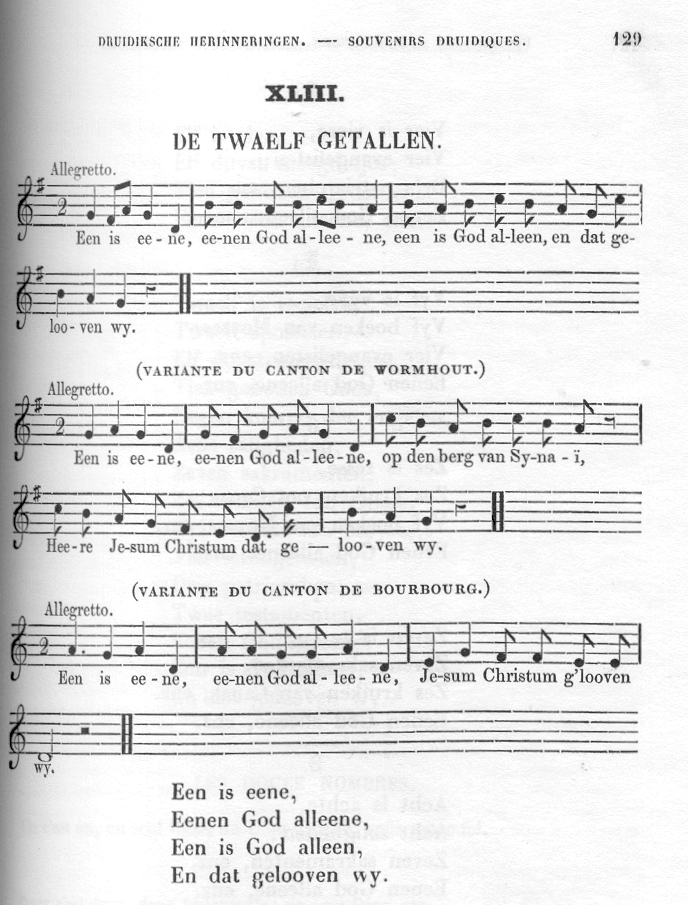

De Twaelf Getallen
Les Douze nombres - The Twelve Numbers
Liederen uit de Westhoek (1856)
Chants de Flandre française collectés par Edmond de Coussemaker (1805 - 1876)
Songs of the French Flemings collected by Edmond de Coussemaker (1805 - 1876)
Mélodie
Arrangement Christian Souchon (c) 2008


DE TWAELF GETALLEN
|
LES DOUZE NOMBRES (Traduction)
(1) dans la légende de Ste Ursule
|
THE TWELVE NUMBERS (tranlation)
(1) in the legend of Saint Ursula
|
Voici des liens qui ouvrent sur des chants et sujets apparentés:
Here are links to related songs and topics:
Pater noster (Chant parodique breton / a Breton parodic Song)
"Les douze jours de l'année" ("Perdrioles" de Flandre et de Cambrésis / "Partridge songs" of Flanders and Cambresis)
De Twaelf Getallen (Chant de foi de Flandres / a Flemish Song of faith)
The twelve Days of Christmas ("Perdrioles"anglaise, écossaise, cornique... / English, Scottish, Cornish "Perdrioles")
Green grow the rushes O (Comptine anglaise - an English Counting rhyme)
Ehad mi yodéa (Chant de foi hébreu/ Jewish Song of Faith)
Calendrier de Coligny
The Calendar of Coligny
Apollon & Heraclius
Mahabharata & Gosperoù ar Raned
Noms des mois / Names of the months
Les Séries (Vêpres des grenouilles)